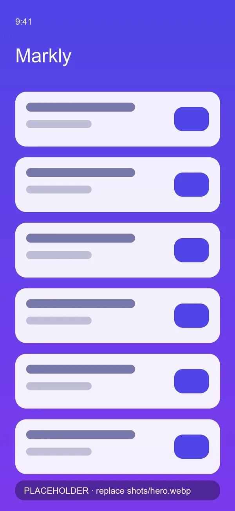
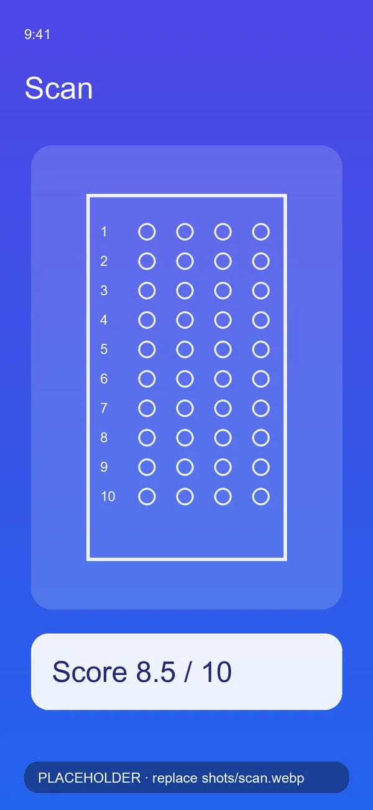
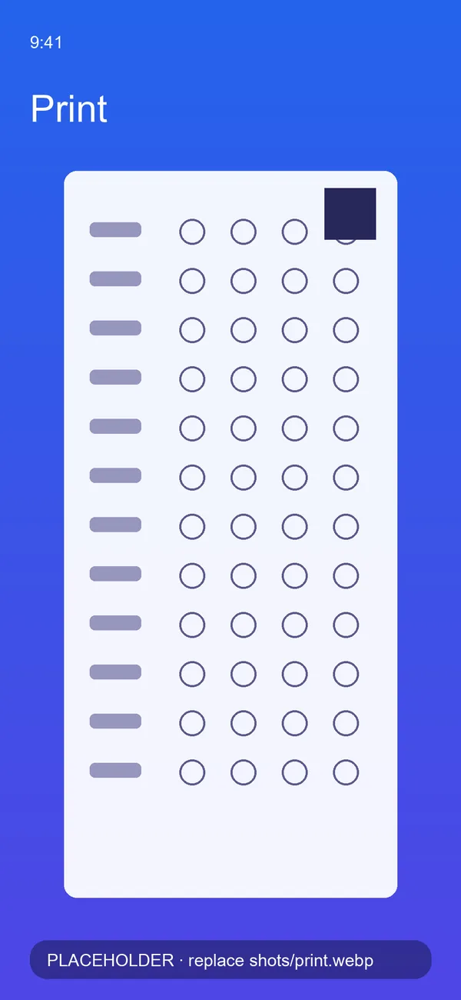
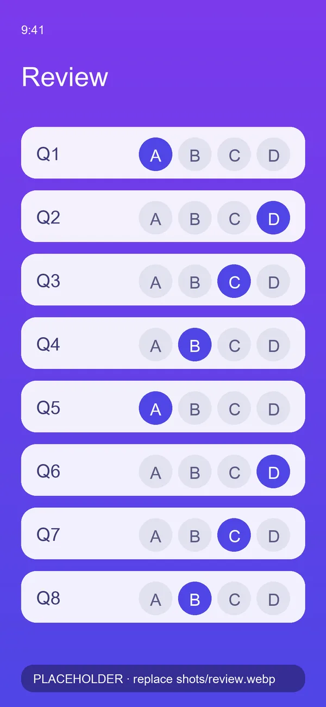
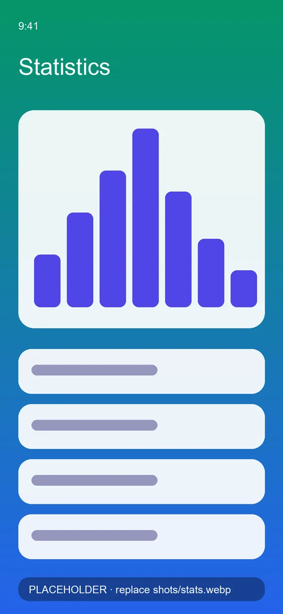
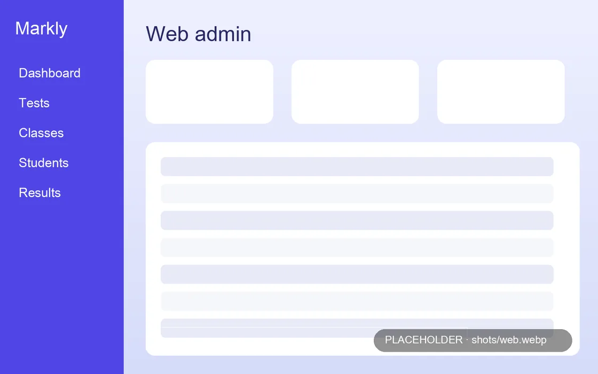
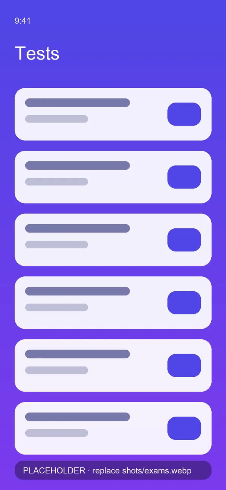

Chấm bài trắc nghiệm bằng camera điện thoạiGrade multiple-choice tests with your phone camera
Tạo bài, in phiếu, quét từng tờ — điểm hiện ngay. Hoàn toàn offline, không tài khoản, dữ liệu chỉ nằm trên máy bạn.Create a test, print the sheets, scan them one by one — scores appear instantly. Fully offline, no account, your data stays on your device.

Quét liên tục, điểm hiện ngayContinuous scanning, instant scores
Đưa từng phiếu vào camera — Markly đọc, chấm và lưu trong chưa đầy một giây, không cần bấm chụp.Hold each sheet to the camera — Markly reads, grades and saves it in under a second, no shutter button needed.
- Hiện ô đang đọc ngay trên khung cameraSee the bubbles being read live on the camera view
- Âm thanh và rung xác nhận (tùy chọn)Optional sound and haptic confirmation
- Phiếu nghi ngờ tự vào hàng đợi “cần xem lại”Doubtful sheets go to a “needs review” queue automatically
- Không có camera? Chấm hàng loạt từ ảnh hoặc PDFNo camera? Grade in bulk from photos or PDFs

In phiếu đúng ý bạnPrint sheets exactly your way
Tạo phiếu ngay trong app, in bằng máy in thường — không cần mua giấy chuyên dụng.Create sheets inside the app and print on any regular printer — no special paper.
- Khổ A4, A5 hoặc 2 phiếu A5 trên một tờ A4A4, A5, or two A5 sheets per A4 page
- In sẵn mã đề; bật/tắt ô Mã SV, Lớp, Mã đềPre-printed version codes; toggle Student ID, Class and Version boxes
- Mã QR trên phiếu không chứa đáp án hay tên sinh viênThe QR code holds no answers or student names
- Phiếu và tệp xuất theo ngôn ngữ bạn chọnSheets and exports follow the language you choose

Nhập đáp án, xem lại từng bàiSet the key, review every sheet
Sai đáp án? Sửa một lần, mọi bài đã quét tự chấm lại. Mọi bài đều giữ ảnh để đối chiếu.Wrong key? Fix it once and every scanned sheet regrades. Every sheet keeps its image for double-checking.
- Nhập đáp án tay hoặc dùng một bài làm mẫuType the key or use a sample answer sheet
- Đổi đáp án, cho điểm lại — kết quả cập nhật ngayChange the key or re-weight a question — results update at once
- Xem lại ảnh phiếu, sửa ô đọc sai, gắn tên sinh viênOpen the sheet image, fix a misread bubble, assign the student
- Lưu ảnh gốc để đối chiếu khi có thắc mắc (tùy chọn)Optionally keep the original photo for disputes

Biết lớp học tốt ở đâu, yếu ở đâuSee where the class is strong and weak
Sắp xếp theo học kỳ, môn và lớp; theo dõi tiến độ thu bài và xem thống kê từng câu hỏi.Organise by term, course and class; track submission progress and see per-question statistics.
- Học kỳ → môn → lớp → sinh viên, nhập danh sách từ tệpTerm → course → class → student, import rosters from files
- Điểm trung bình, phân bố điểm, tỉ lệ đúng từng câuAverage, score distribution, correct rate for every question
- Theo dõi lớp nào đã nộp bao nhiêu bàiSee how many sheets each class has handed in
- Xuất CSV/Excel và PDF theo bài hoặc theo nhómExport CSV/Excel and PDF per test or per group

Quản lý trên máy tính, không cần cápManage from your computer, no cable
Bật một công tắc, mở địa chỉ trên trình duyệt máy tính cùng mạng WiFi, nhập PIN là xong.Flip one switch, open the address in a computer browser on the same WiFi, enter the PIN — done.
- Sửa lớp, sinh viên, đáp án trên bàn phím lớnEdit classes, students and keys on a full keyboard
- Có mã PIN; chỉ truy cập được trong mạng nội bộPIN-protected; reachable only on your local network
- Không có dữ liệu nào đi qua internetNothing goes over the internet

Và còn nhiều hơn thếAnd a lot more
Những chi tiết nhỏ giúp một kỳ thi trôi chảy.Small details that keep an exam day smooth.
Nhiều mã đềMultiple versions
Xáo thứ tự câu/đáp án theo từng mã đề, tự nhận mã đề khi chấm.Shuffle questions and options per version; the version is recognised when grading.
Sao lưu có mật khẩuPassword-protected backup
Khôi phục được cả giữa iPhone và Android.Restore even between iPhone and Android.
Cả Android TVAndroid TV too
Chấm từ ảnh/PDF ngay trên TV hoặc máy tính bảng.Grade from photos/PDFs on a TV or tablet.
7 ngôn ngữ7 languages
English, Tiếng Việt, 简体中文, Español, Português, 日本語, Deutsch.English, Tiếng Việt, 简体中文, Español, Português, 日本語, Deutsch.
Phiên quét theo nhómScan sessions per group
Mỗi lần quét gom theo bài và lớp, xem lại bất cứ lúc nào.Every scan run is grouped by test and class, ready to revisit.
Nhập danh sách nhanhQuick roster import
Nhập sinh viên từ tệp hoặc gõ tay.Import students from a file or type them in.
Xuất đủ kiểuFlexible exports
CSV, Excel, PDF; bảng điểm theo bài hoặc theo lớp.CSV, Excel, PDF; score tables per test or per class.
Dọn dẹp dễ dàngEasy clean-up
Lưu trữ bài cũ, xóa toàn bộ dữ liệu bằng một lần xác nhận.Archive old tests, wipe everything with one confirmation.
Nhật ký không chứa tênLogs without names
Nhật ký chẩn đoán không bao giờ ghi tên hay mã sinh viên.Diagnostic logs never record student names or IDs.
Thử nhanh bằng phiếu mẫuQuick try with sample sheets
Tạo bài mẫu và chấm 3 phiếu đã tô sẵn chỉ bằng một chạm, không cần in giấy.Create a sample test and grade 3 pre-filled sheets in one tap — no printing.
Nhắc sao lưuBackup reminders
Nhắc nhẹ khi đã 14 ngày chưa sao lưu để không mất bài đã chấm.A gentle nudge after 14 days without a backup, so graded sheets are never lost.
Web tự tắt khi không dùngWeb admin switches itself off
Tự tắt sau 15 phút không có máy tính kết nối; có cảnh báo trước khi bật.Turns itself off after 15 minutes with no computer connected, with a warning before you enable it.
Bắt đầu trong 3 bướcGet started in 3 steps
Lần đầu mở app sẽ có hướng dẫn nhanh; xem lại ở Cài đặt › Xem hướng dẫn sử dụng.A quick guide appears on first launch; replay it in Settings › View user guide.
- Tạo bài & in phiếuCreate & printChọn số câu và kiểu câu hỏi, in phiếu.Pick the number of questions and types, print the sheets.

- Nhập đáp ánSet the keyBài kiểm tra › chọn bài › Đáp án.Tests › pick a test › Answer key.
- Quét và xem điểmScan and see scoresĐặt phiếu phẳng, đủ sáng, thấy 4 góc.Flat sheet, good light, all 4 corners visible.
Dữ liệu của bạn, trên máy của bạnYour data, on your device
Danh sách sinh viên và điểm số là thông tin nhạy cảm. Markly không có máy chủ nào để gửi chúng đi.Student lists and scores are sensitive. Markly has no server to send them to.
FAQ
Cần kết nối internet không?Does it need an internet connection?
Không. Mọi xử lý diễn ra trên thiết bị. Web quản trị (tùy chọn) chỉ hoạt động trong mạng WiFi nội bộ.No. Everything is processed on the device. The optional web admin only works on your local WiFi.
Dữ liệu của tôi được lưu ở đâu?Where is my data stored?
Chỉ trong bộ nhớ riêng của ứng dụng trên thiết bị. Hãy dùng Cài đặt › Sao lưu & khôi phục để lưu bản sao có mật khẩu.Only in the app's private storage on your device. Use Settings › Backup & restore for a password-protected copy.
Tôi cần phiếu riêng không?Do I need special sheets?
Có, hãy in phiếu từ chính Markly (A4, A5 hoặc 2 phiếu A5 trên một tờ A4). Mã QR trên phiếu không chứa đáp án hay tên sinh viên.Yes, print the sheets from Markly itself (A4, A5 or two A5 per A4). The QR code on the sheet contains no answers or student names.